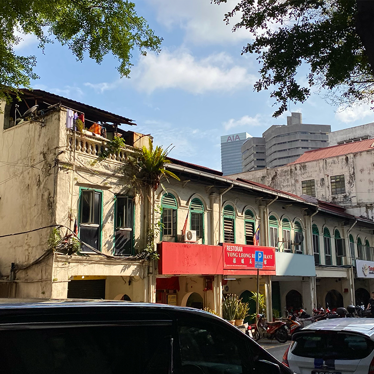
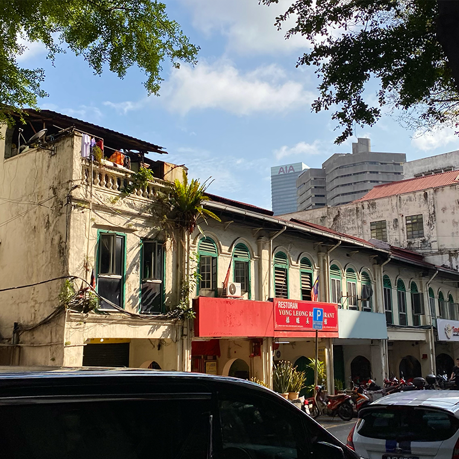

Chilli Pan Mee
Pan mee/ban mian is of Hakka origin. KL (Kuala Lumpur) chili pan mee is a twist from the traditional Chinese ban mian served with soup. Chili pan mee was “invented” by Kin Kin restaurant. The queue is always long and you can top up with the fiery chili paste as much as you want. The flat noodles are tossed in spicy umami sauce made with tons of dried chili, garlic, dried shrimp, and seasonings and then topped with ground meat, poached eggs, and crispy anchovies.
Ingredients
- 4 soft poached eggs
- 800g (1 lb) cooked wheat noodles
- Blanched snow peas, green beans or choy sum, to serve
- Crispy anchovies
- ½ cup vegetable oil
- ½ cup dried anchovies
- Spicy chilli sambal
- ¼ cup dried shrimp
- 20 large dried red chillies
- 3 small red Asian shallots, roughly chopped
- 5 garlic cloves, roughly chopped
- 2 fresh red chillies, roughly chopped
- 3 tbsp vegetable oil
- tsp sugar
- 2 tsp sea salt
- Mushroom & Pork
- 4 dried shitake mushrooms
- 2 tbsp vegetable oil
- 350g (12 oz) minced pork
- 3 garlic cloves, finely chopped
- 3 tbsp soy sauce
- 1 tbsp dark sweet soy sauce
- 1 tbsp oyster sauce
- 1 tsp sugar
- 1 tsp cornflour (cornstarch), mixed with 1 tbsp water
- 1 tsp sesame oil
- ½ tsp white pepper
Instructions
-
For the mushroom & pork, place the dried shitake mushrooms in a bowl and cover with hot water. Soak for 15 minutes.
-
For the spicy chilli sambal, soak the dried shrimp in hot water for 15 minutes. And in a separate bowl, soak the dried chillies in hot water for 15 minutes. Once your ingredients are softened, drain the shrimp and place in the bowl of a food processor. Add the shallots and garlic and blend until finely chopped. Transfer the mixture to a bowl.
-
Squeeze the dried chillies (reserve the chilli soaking liquid) and place them in the same food processor. Add in the fresh chillies and blend to a rough paste (you may need to add a couple of tablespoons of chilli soaking liquid to help the processor along). Set aside.
-
Add the 3 tablespoons of vegetable oil into a wok or large frying pan over medium-high heat. Add the dried shrimp mixture and cook, stirring, for 3-4 minutes. Now add in the chilli mixture and stir-fry until well combined. Then turn the heat to very low and cook, stirring every so often, for 30 minutes or until the mixture is dark and jammy.
-
In the meantime, continue preparing your mushroom & pork. Squeeze your softened shitake mushrooms to remove excess liquid. Use a knife to remove and discard the tough stems. Then cut the mushrooms into thick slices. Set aside for later.
-
Heat the 2 tablespoons of vegetable oil in a work or large frying pan over high heat. Add the pork and stir-fry until almost cooked. Add the garlic and mushrooms and stir-fry for a couple of minutes. Then add the soy sauce, dark sweet soy sauce, oyster sauce, pepper and sugar. Stir-fry until well combined, then add 1 cup water and allow to simmer for 5 minutes.
-
In the meantime, finish the spicy chilli sambal by stirring through the sugar and salt. Stir-fry for a minute or until well combined and the sugar has dissolved. Remove from the heat and set aside for later.
-
Finish the mushroom & pork by stirring through the corn flour mixture. Stir and simmer for a further minute or until thick and glossy. Turn the heat off and stir through the sesame oil and pepper.
-
For the crispy anchovies, heat the oil in a small frying pan over high heat. Add the dried anchovies and cook for 2-3 minutes or until crisp. Drain on paper towel.
-
To assemble, divide the noodles and snow peas among serving bowls. Top with the mushroom & pork. Add a generous couple of spoonfuls of the spicy chilli sambal, a small handful of the crispy anchovies and a poached egg. Serve with extra spicy chilli sambal on the side. Mix everything in the bowl before digging in!
Gallery
Sources
- What To Cook Today provides a relatively easy recipe that hits all the main parts of a chili pan mee. The recipe is authentic and has a lot of photos that showcase the process. The only issue is that they do not use the traditional flat noodles.
- Marion's Kitchen has a recipe that is very detailed and provides cleaer instructions on how to create each part. However, they include componenets that aren't seen in traditional pan mee.
- A Kitchen Cat has a long explanation about the history and comfort of a bowl of chili pan mee. The recipe is also simple and straightforward without any extra flairs.
Style Inspo
- DONÜTS is website that well showcases the product and leads you smoothly to each part of the website.
- Half-Baked Harvest has wonderful photography of their dishes and closely explains each step. Thye include photos, reviews, similar recipes, and a contact card at the end.
- The Frans Hals Museum displays a website that presents the information in well shaped boxes and sections so that everything is easily consumable by the audience.


 
